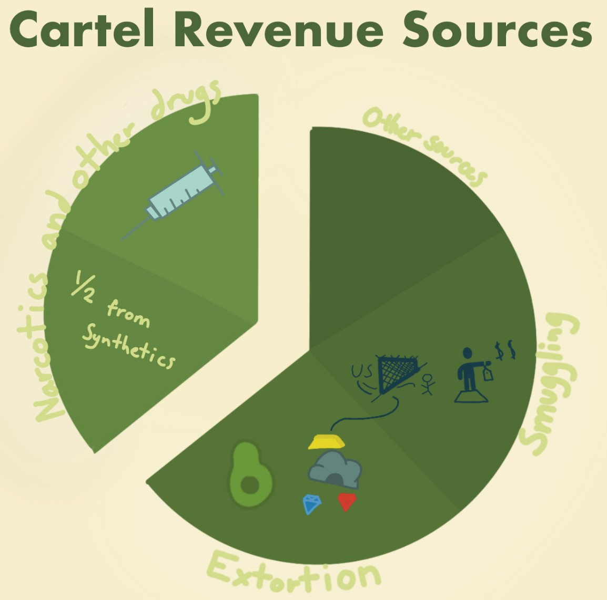

Visualing Cartels
An early visualization of regional security risks in Mexico
I have always been interested in data visualization and design. Through middle and high school, I worked as an editor at my school’s newspaper. One of the first articles I wrote involved surveying students on their favorite Halloween candy and creating an (admittedly very ugly) pie chart. After going through the Notation in Science Communication, I feel similar sentiments towards this infographic I made at the end of freshman year in COLLEGE 105: The Politics of Development as I do towards my first foray into data visualization—it was a great first step, but with lots of room for improvement.
This infographic has a lot going for it. The use of color is consistent and pleasant, the choropleth does an excellent job of highlighting the Mexican states most at risk from cartel violence (plus the little icons are memorable and quickly summarize the difference between the two cartels), and the infographic as a whole feels very cohesive and easy to read.

Looking back at this artifact there is a lot that I’d either tweak or change. The titles to the various graphs aren’t super descriptive nor highlight the message they are trying to convey. The fact overview in the bottom right corner is very busy and contains many elements not central to the point (such as breaking down the classification of those assassinated). The element with the biggest potential for revisement is the “Cartel Revenue Sources” figure. The pie chart implies that the size of the slices reflects the percentage of cartel income that comes from the various categories. However, not only does the revenue source vary dramatically from cartel to cartel, but I also didn’t have access to the exact breakdown so each of the slices are the same size. I should have used a different tabular format that doesn’t imply numerical backing. Additionally, the labels and icons are very hard to read so better color choices and art style would have gone a long way in improving this element of the infographic.
Despite all these issues, this artifact does a solid job of documenting my growth through the notation and establishing my preexisting interest in data visualization as a field. Though I had many of my own ideas about what made data visualization interesting and unique, through the notation I was able to refine and solidify my skills.